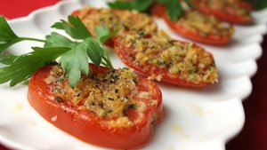

Provincial Tomatoes

Description
Delicious fresh tomatoes broiled with a tasty cheese topping.
Ingredients
- 2 large tomatoes, cut into 1/4 inch slices
- salt and pepper to taste
- 1 tablespoon olive oil, or as needed
- ½ cup grated Parmesan cheese
- ¼ cup grated Asiago cheese
- ¼ cup dry bread crumbs
- 2 tablespoons dried parsley
Steps
- Preheat your oven's broiler.
- Place tomato slices in a single layer on a baking sheet or in a baking dish, season with a little salt and pepper, and drizzle with olive oil. Mix together the Parmesan cheese, Asiago cheese, bread crumbs and parsley; sprinkle over the tomato slices. Drizzle a little bit more olive oil over the top.
- Broil for 5 minutes, or until the top is golden and toasty.